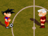

Tabla de Contenidos
Juegos
Mediante esta sección podrá conocer los videojuegos en los que estamos trabajando, seleccione alguno de ellos para obtener mas detalles.
Completos para PC
I Robot?
Eres la única persona en un mundo gobernado por robots, ¡Que no te descubran!.
Don Ceferino Hazaña
Don Ceferino Hazaña debe rescatar a su vaca secuestrada por un grupo de extraterrestres.Completos para móviles
Asadetris Mobile
Un juego similar a Tetris para teléfonos celulares.
Ceferino Mobile
Version del juego Don Ceferino para teléfonos celulares.En desarrollo para PC
Asadetris
Asadetris es un juego similar a Tetris, pero donde las piezas son porciones de comida que tienes que acomodar lo mas rápido que puedas.Desatendidos
Los siguientes juegos están sin terminar, y por el momento no hay proyectos de desarrollo trabajando en ellos.
Pocket Volleyball
Juega un partido de volley ball con tus personajes favoritos.

Pongix
Un homenaje al videojuego clásico Pong.
Aquatic Bubble
Vive una experiencia de acción acuática.
Chanta Claus
Recolecta todo el dinero que puedas para tus próximas navidades (para comprar regalos a los niños, claro).
